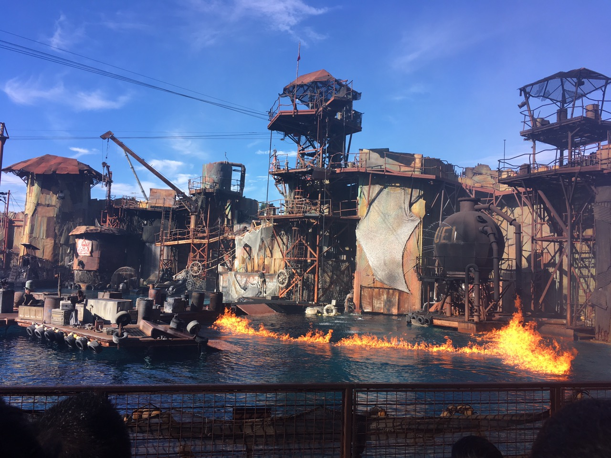

💙Universal Studios💙

- Address
100 Universal City Plaza, Universal City, United States
- Attractions
- Studio Tour
- Despicable Me Minion Mayhem
- The Simson Ride
- Waterworld: A live Sea War Spectacular
- Harry Potter and the Forbidden Journey
- Flight of the Hippogriff
- Revenge of the Mummy: The Ride
And so on...
Universal Studios Hollywood is a film studio and theme park in the San Fernando Valley area of Los Angeles County, California. About 70% of the studio lies within the unincorporated county island known as Universal City while the rest lies within the city limits of Los Angeles, California. It is one of the oldest and most famous Hollywood film studios still in use. Its official marketing headline is "The Entertainment Capital of LA".[1] It was initially created to offer tours of the real Universal Studios sets and is the first of many full-fledged Universal Studios Theme Parks located across the world.
Outside the theme park, a new, all-digital facility near the Universal Pictures backlot was built in an effort to merge all of NBCUniversal's West Coast operations into one area. As a result, the current home for KNBC, KVEA and NBC News with Noticias Telemundo Los Angeles Bureaus with new digital facility is on the Universal lot formerly occupied by Technicolor SA. Universal City includes hotels Universal Hilton & Towers, the Sheraton Universal Hotel, and Universal CityWalk, which offers a collection of shops, restaurants, an 18-screen Universal Cinema and a seven-story IMAX theater. In 2017, the park hosted 9.056 million guests, ranking it 15th in the world and 9th among North American parks.